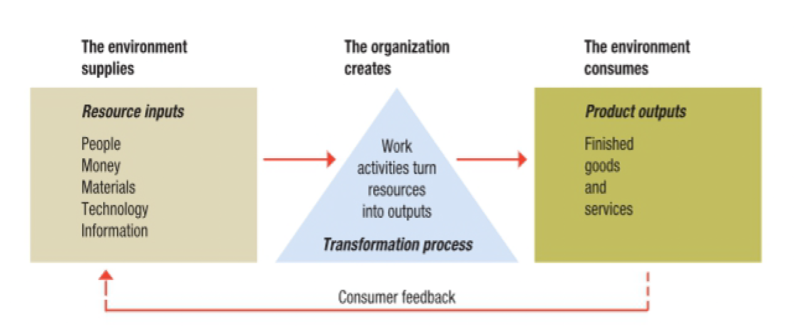
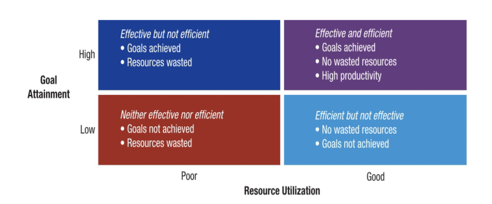
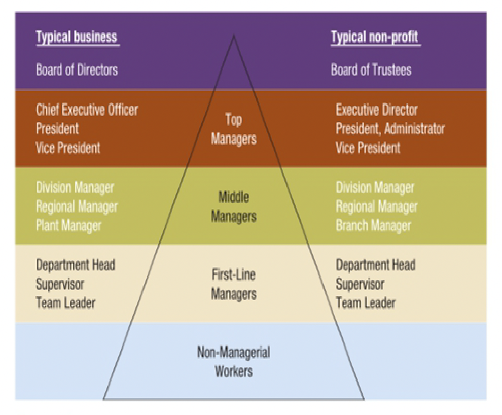

01
Productivity
Work produced, including its quantity and quality, compared with resources used.
Store check: customers served per staff hour, with order errors counted too.Good managers look beyond sales. They ask how work is organized, whether customers get what they need, and what the team spends to make it happen.
Start with the organizationAn organization is a structured group of people who work together to achieve a purpose. It needs roles, communication, and ways to get work done. A grocery store, a charity, and a school all count, even though their goals differ.
The store takes in food, staff time, money, equipment, and information. Employees turn these inputs into stocked shelves and customer service. Sales and complaints go back to the manager as feedback.
The store cannot plan in isolation. Supplier delays, customer demand, and competitors can change the next order or staffing schedule.

The course separates productivity, performance effectiveness, and efficiency. One good number cannot stand in for all three.
Work produced, including its quantity and quality, compared with resources used.
Store check: customers served per staff hour, with order errors counted too.Whether the store reaches its goal.
Store check: did the evening queue become shorter without upsetting customers?How much time, labour, and money the goal costs.
Store check: does the extra checkout save enough waiting time to justify its staffing cost?Opening another register may serve more shoppers. If checkout mistakes also rise, productivity has a quality problem. If queues barely change, the plan is ineffective. If waits fall but wages rise far beyond the benefit, it is inefficient.

Imported produce offers choice, but a late shipment or higher transport cost can change prices and stock. The manager needs backup suppliers.
A mixed team may notice customer needs the owner misses. Fair shifts and clear, respectful communication help staff contribute.
Checkout records show busy hours. The manager should compare them with staff observations, fix bad data, and protect customer details.
The course distinguishes top, middle, and first-line managers. A small store may have one person covering two levels, but the responsibilities still differ.

Sets the long-term direction and decides whether expansion fits the store’s purpose and finances.
Turns that direction into store plans, budgets, and coordination across teams.
Guides cashiers, trains new staff, and handles the daily queue.
Serve shoppers and report problems the management team may not see.
To test a second checkout, the owner sets a waiting-time goal, assigns staff and equipment, explains the trial, then compares results with the goal. That is the four-function cycle from Unit 1.4 in one everyday decision.